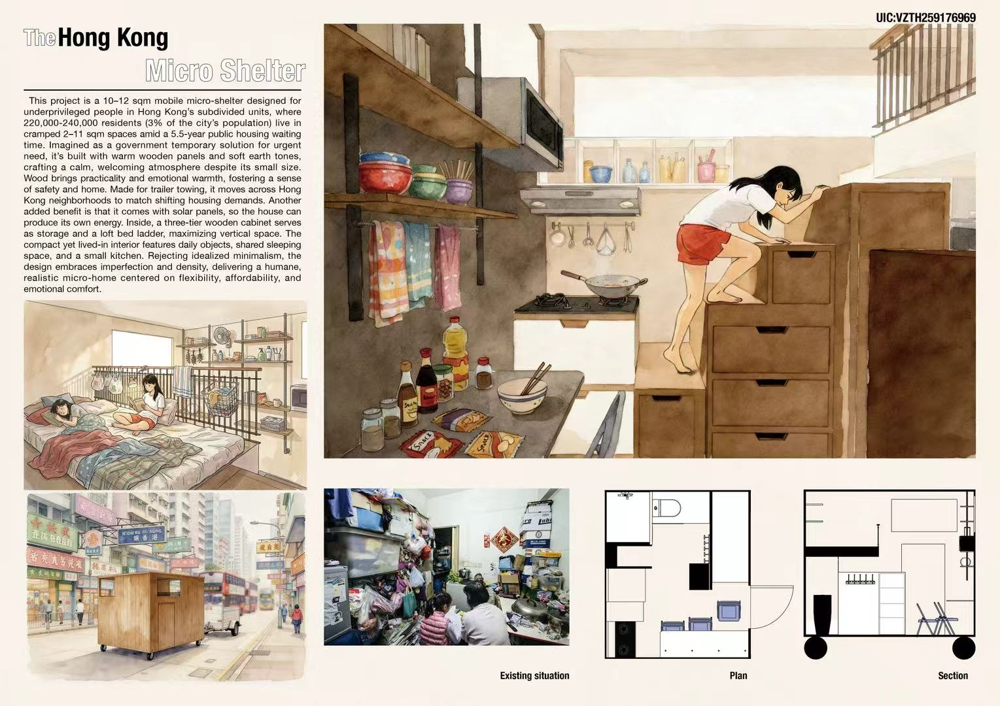

Boarding / High-School Application Portfolio
Art / Architecture /
Electronic Engineering Portfolio
Heidi Portfolio
A collection of selected works exploring form, structure, systems, and the creative process behind making things by hand.

Featured Project
Micro Shelter
A compact housing study exploring privacy, density, and livable space in a small urban footprint.
- Studied Hong Kong micro-living conditions and spatial constraints.
- Tested how furniture, circulation, and daylight can make a small room feel usable.
- Developed the project through reference images, model views, and final presentation studies.
Architecture + Physical Work
Selected models, spatial studies, and physical builds

River House
A residential design that studies how a building can sit near water while keeping a calm connection to landscape.
- Explored massing, views, and the relationship between structure and terrain.
- Focused on balance between shelter, openness, and site movement.

Villa Savoye Plastic Set
A physical architecture study using plastic components to understand proportion, elevation, and modernist form.
- Built from modular pieces to study planes, columns, and clean geometry.
- Used the model as a way to learn from an important architectural precedent.

Fallingwater Wood Set
A wood model study focused on layered horizontal forms, cantilevers, and the dialogue between building and nature.
- Explored material warmth and structural layering through model construction.
- Practiced precision, patience, and assembly through a physical build.

Forgotten Peak Middle-High School
A school design concept considering learning spaces, circulation, and a memorable campus identity.
- Designed around how students move between public, shared, and quieter areas.
- Connected architecture with daily student experience.

Contemporary Museum
A museum concept studying public space, exhibition flow, and the way visitors encounter art and architecture.
- Organized galleries and open areas around the visitor journey.
- Considered how scale and light can make a museum feel calm but active.

Highrise Building
A vertical architecture study exploring height, structure, and repeated spatial systems.
- Studied repeated floors, facade rhythm, and the relationship between base and tower.
- Used multiple views to compare massing with smaller details.

Motel / Hotel
A hospitality design study about rooms, circulation, privacy, and the feeling of arrival.
- Considered movement from public entry spaces into more private rooms.
- Tested repeated room modules as part of a larger building.

Cradle-Cafe
A small public-space concept combining cafe atmosphere with a soft, welcoming architectural form.
- Explored how a cafe can feel protected, warm, and open.
- Balanced expressive shape with circulation and seating space.

Church
A sacred-space study focused on light, quietness, gathering, and architectural atmosphere.
- Studied how height, openings, and simple forms create mood.
- Explored procession from entrance to focal space.

Something Like a Dorm
A student-housing concept exploring shared living, privacy, and daily routines.
- Balanced individual rooms with common areas.
- Connected the project to boarding-school life and daily student use.

Freehand Sketches
A chronological sketching study showing observation, line confidence, and form exploration.
- Practiced drawing by hand to improve proportion and visual memory.
- Kept the work loose enough to show process and decision-making.

Circuit Studies
Electronic Engineering experiments with circuits, components, testing, and hands-on prototyping.
- Built and tested circuit arrangements with physical components.
- Shows curiosity across making, engineering, and visual design.
Caption Drafting Note
Roomy process notes are built in for every project.
This first version uses polished temporary writing based on folder names and visible file context. Exact materials, grade/year, and story details can be refined next.